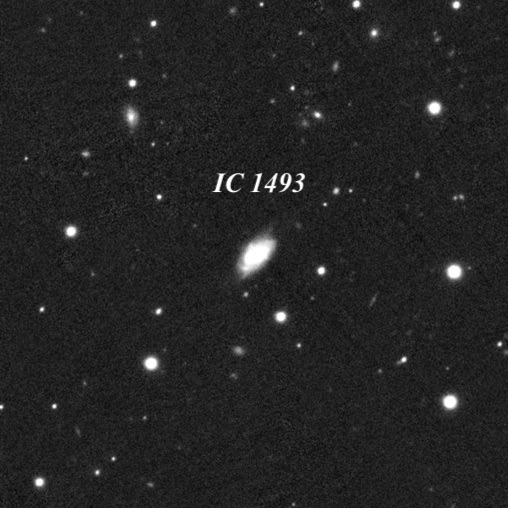

OR October 17, 2025: Not your usual observing list finished!
The earlier accomplishment took place on a working sheep farm in the southern Tablelands of New South Wales. Observing with an 18-inch Obsession, the final object to complete the NGC was NGC 2932 and the last object observed was NGC 2932 using an 18" Obsession. There wasn't much to see as NGC 2932 is just an ill-defined Milky Way star field in Vela (not a physical open cluster), which was 15° up at the time (2:30 AM). The NGC contains a large number of far southern objects below -60° dec, so it wasn't until my 10th observing trip to the southern hemisphere that I finally got around to NGC 2932, since I was also observing a wide variety of objects not included in the NGC.
This time I was at a cattle ranch north of the bay area and the last object was IC 1493 = LEDA 1458643, a faint galaxy in Pegasus (B = 16.7, V = 15.9, according to SDSS photometry). The NGC is largely the work of William Herschel in the northern hemisphere (total of ~2415 discoveries) and John Herschel (nearly 1700 objects) in the southern hemisphere, but with contributions from a large number of observers. The IC I is also mainly the work of two observers – French astronomer Stephane Javelle (767 discoveries) and American amateur Lewis (along with his teenage son Edward) Swift (284 discoveries). Javelle and the Swifts account for 75% of the objects in the IC I, and except for a few photographic discoveries by Max Wolf (at Heidelberg) and E.E. Barnard (at Lick), the remaining 25% of the IC I consists solely of visual discoveries.
The IC 2 is a different animal -- about 65% of the objects are galaxies discovered photographically in the southern hemisphere. There's also a big difference in visibility between NGC and IC I galaxies. Stephane Javelle observed with a high-quality 30-inch f/23 refractor at the Nice Observatory in southern France and discovered a large number of very faint and small galaxies. Many of these are missing from the major galaxy catalogs of the 1960s and 1970s (UGC, CGCG, MCG). These catalogs were based on the Palomar Observatory Sky Survey (POSS) prints of the early 1950s, and they identify galaxies (and other objects) down to roughly B magnitude of 16.0 or a bit brighter.
Although Javelle's faintest discoveries are missing original PGC numbers (PGC 1 through 73197), they are now identified with high LEDA or PGC numbers (such as LEDA 1458643). But in a number of cases the IC designation isn't recognized by SIMBAD (or MegaStar which I use to print charts), despite the fact that Javelle's reported positions are often just a few arc seconds from the center of the galaxy. NED (NASA-IPAC Extragalactic Database) correctly identifies all of the faint IC objects, though.
You can download an Excel file of the historic IC catalog, as well as a modern corrected version with aliases and other data, at Wolfgang Steinicke's site. My observing notes (with lots of historical information) are posted on Adventures in Deep Space for the entire NGC (7840 objects) and all but 119 objects in the IC I. I plan to update my files shortly to cover the entire IC I.
Here’s the unimpressive 16th magnitude smudge, otherwise known as IC 1493 in Pegasus, the last IC on my list.
Steve
